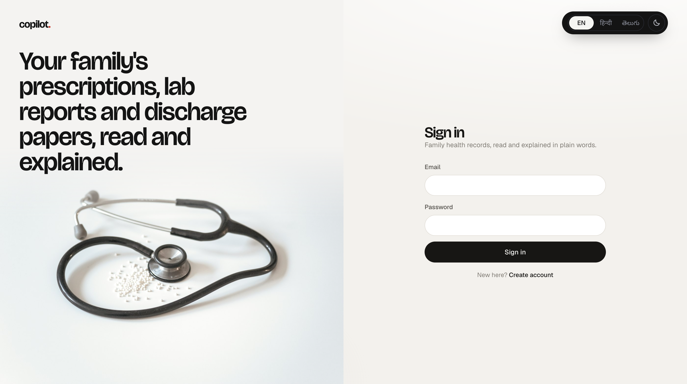
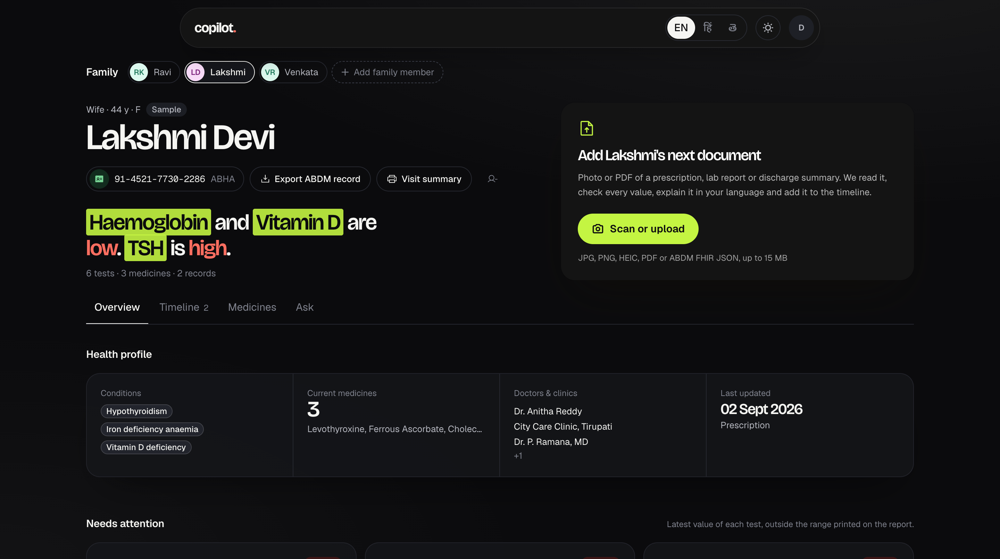
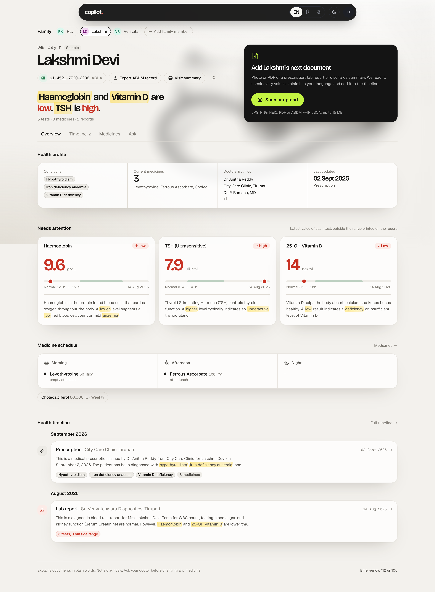
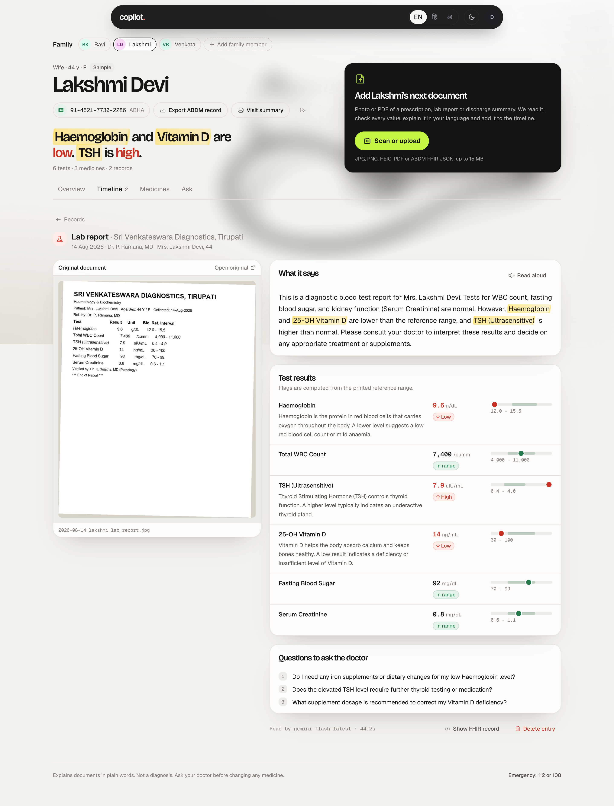
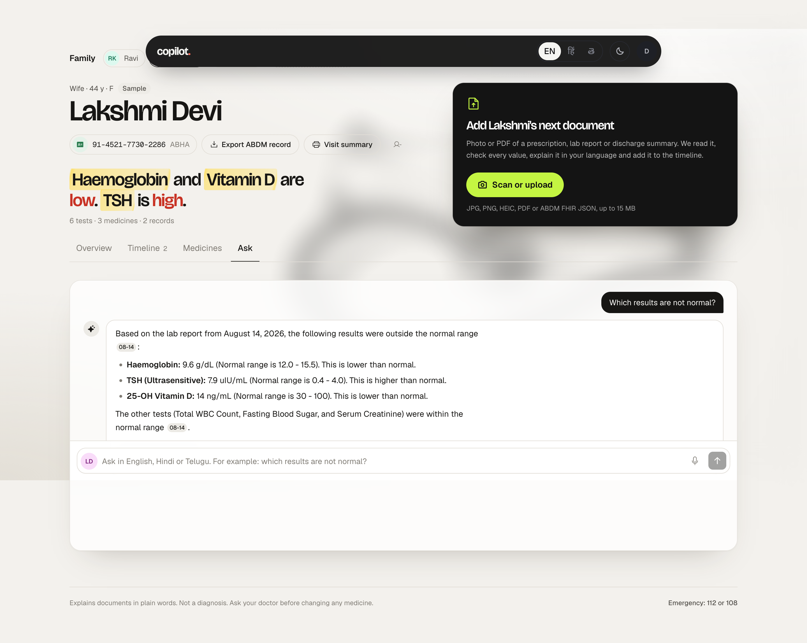
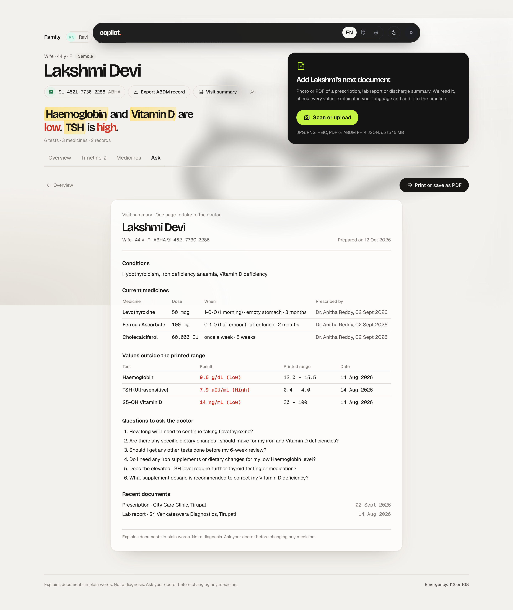
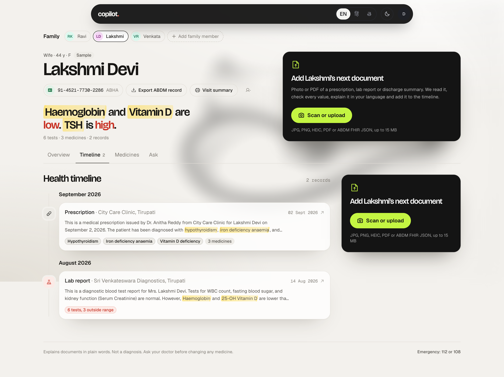
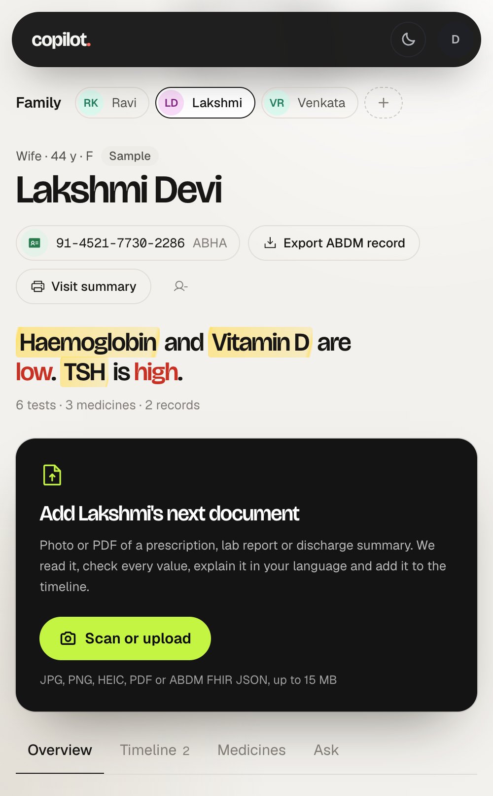

A copilot that reads a photo or PDF of any Indian medical document, checks every value against the range printed on it, explains it in English, Hindi or Telugu, and keeps one ABDM-ready timeline per family member.
Scan or upload English · हिन्दी · తెలుగు · FHIR R4 · ABHA
Prescriptions, lab reports, discharge summaries. Printed, handwritten-style, bilingual, PDF or phone photo.
Every HIGH / LOW flag is recomputed from the printed reference range, never taken from the model's guess.
Plain words, three languages, questions to ask the doctor, and a printable visit summary.
Prepared 13 October 2026 · Prototype by Karnam Venkata Chaitanya · github.com/karnamvenkatachaitanya/Personal-Health-Copilot
An Indian family's health history lives in a drawer: a prescription from one clinic, a lab printout from another, a discharge summary from a hospital stay. The person managing it is usually an adult child looking after parents. They cannot tell at a glance which value is out of range, which medicines are current, or what to ask at the next visit. The documents are in English, the family often is not.
Gemini vision reads the page: medicines, strength, 1-0-1 schedules, timing, duration, every test row with its value, unit and printed range, diagnoses, doctor, facility and date. Handwriting-style and Hindi / Telugu text included.
A deterministic parser recomputes each flag from the printed range ("4,000 - 11,000", "< 6", "12.0 to 15.5"). Non-medical uploads are refused. If reading fails, nothing is saved; no fallback data is ever invented.
A short summary, a one-line meaning for each out-of-range value, and questions for the doctor, all in English, Hindi and Telugu. Key terms are highlighted; summaries can be read aloud.
One caregiver account, many family members. Conditions, current medicines, doctors and clinics are gathered across documents; records sit on a month-by-month timeline.
Questions answered only from that person's records, with citations that open the source document. Voice input via Whisper. Self-harm or emergency wording is answered with 112 / 108 / Tele-MANAS before any model runs.
Every document becomes an NRCES-profile FHIR R4 bundle. Mock ABHA link (format-validated), FHIR export per person, and FHIR import back through the same pipeline. Printable visit summary for the doctor.
The original bytes go to Gemini with a strict transcription prompt: no invented fields, Indian day-first dates, every lab row, structured fields in English with Hindi and Telugu only inside the summary, explanations and questions. Models are tried in a chain; a model that reports "quota exceeded" is skipped for the period it names. Digital PDFs fall back to their text layer plus Groq.
Values like "13,800" and ranges like "4,000-11,000", "< 6" or "12.0 to 15.5" are parsed deterministically. A hyphen between two numbers is a separator, never a minus sign. The computed flag overrides the model's; when they disagree a warning is stored with the record.
Each record keeps the full extraction, extraction metadata, a name check against the family member, the FHIR bundle, the original file and a downscaled preview. Medicines, lab values and conditions are also written to normalised tables for queries and trends.
Every row carries the owner's id and row-level security limits an account to its own family. Originals live in a private bucket under the owner's folder and are served through one-hour signed links. Every view of an original, move, delete, ABHA link and export is audited.
| Table | Holds |
|---|---|
| patients | Family members of one account: name, relation, age, sex, ABHA number / address, sample flag |
| health_records | Type, date, title, full extraction (three languages), extraction metadata, name check, storage and preview paths, FHIR bundle |
| medications · lab_observations · conditions | Normalised rows per record: dose, frequency, timing; numeric value, parsed low / high bounds, flag; diagnosis |
| audit_log | Who did what to which record, when |
FHIR profiles: PrescriptionRecord, DiagnosticReportRecord, DischargeSummaryRecord bundles with Patient (ABHA id), Practitioner, Organization, Condition, MedicationRequest, Observation and DiagnosticReport.
Seven synthetic documents with known contents were run through the live pipeline. Each check is one fact: a test value, a flag, a medicine strength, a diagnosis, the document date, or the presence of a Hindi and Telugu summary. The two "phone photo" rows are the same documents tilted 4°, blurred, with noise, uneven lighting and heavy JPEG compression.
| Document | Correct | Model used | Time | Missed |
|---|---|---|---|---|
| Lab report photo | 12/12 | gemini-3.8-flash | 21.5s | — |
| Lab report, phone photo (tilted, blurred, noisy, q45) | 12/12 | gemini-flash-lite-latest | 14.6s | — |
| Handwriting-style prescription | 9/9 | gemini-3.8-flash | 14.2s | — |
| Same prescription, phone photo | 9/9 | gemini-flash-lite-latest | 27.8s | — |
| Discharge summary PDF | 6/8 | gemini-flash-lite-latest | 12.9s | CRP value, date |
| Telugu + English prescription | 8/8 | gemini-flash-lite-latest | 16.2s | — |
| Hindi + English prescription | 5/5 | gemini-flash-lite-latest | 10.7s | — |
| Total | 61/63 | |||
The two misses happened on the discharge PDF when the primary model's free-tier daily quota was exhausted during testing and the lightest model answered. With the primary model available, the same PDF scored 8/8. For the live demo the Gemini and Groq keys should be on paid tiers; both free tiers impose per-day and per-minute caps that a demo can exceed.

Sign in. Email and password through Supabase Auth.

Overview, dark theme. The headline names what stands out.

Overview: findings headline, the one primary action, unified health profile, out-of-range values on range bars with plain-language meaning, medicine schedule, timeline.

A record: the original beside what was read. Every value sits on a bar against its printed range; key terms are highlighted; questions to ask the doctor follow.

Ask: grounded answer with citations that open the record.

Visit summary: one printable page for the doctor.

Timeline, grouped by month.

Phone width.
| Criterion | Where it is met |
|---|---|
| AI utilization (35%) | Vision extraction of medicines, doses, values, dates and diagnoses across print, handwriting-style, bilingual and degraded photos (61/63 checks). Plain-language summaries and per-value explanations in three languages. Range-computed flags keep the AI honest. |
| Technical architecture (25%) | FastAPI pipeline with model fallback and quota cooldown; deterministic normaliser; Postgres with RLS, normalised clinical tables, private storage with previews; NRCES-profile FHIR R4 bundles, export and import. |
| User experience (20%) | One primary action; findings headline; original beside extraction; instant switching and record opening; English, Hindi and Telugu across the UI; voice in, read aloud; works at phone width; light and dark. |
| Healthcare impact (10%) | No diagnosis or dose advice; disclaimers everywhere; name-mismatch guard; "hard to read" labels; crisis routing to 112 / 108 / Tele-MANAS; visit summary turns reading into a better consultation. |
| Presentation (10%) | Working prototype with a seeded sample family, two live-demo documents, this document and the README architecture diagram. |
| Bonus: multi-language | Full UI, summaries, explanations, questions and answers in Hindi and Telugu; bilingual prescriptions read. |
| Bonus: ABDM / ABHA | FHIR R4 bundles with ABHA identifiers, mock ABHA link with format validation, export and import. |
cd backend && python3.12 -m venv venv && ./venv/bin/pip install -r requirements.txt cp .env.example .env # Gemini, Groq, Supabase keys ./venv/bin/uvicorn app.main:app --port 8000 supabase link --project-ref <ref> && supabase db push cd frontend && npm install && npx next dev -p 3010